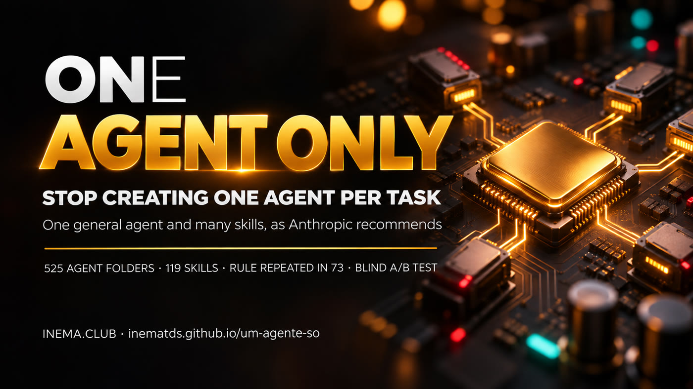

You've already created many agents
One folder for sales, another for support, another for content. You want to see how big this is and get a plan to merge it all without losing anything.
Uses: count your agents
You created an agent for each task, and now you fix the same rule in all of them. Paste one request into your AI: the kit counts your agents, helps you turn each task into a skill (a folder of instructions the agent opens when it needs it) and blind-tests whether it still helps. In the end, you have one agent only, and it learns for all tasks at once.


In one sentence
You want to correct the AI once and see the fix work in every task. Anthropic, the maker of Claude, recommends one general agent and many skills: the model is the processor, the agent is the operating system and the skills are the apps. A skill is a folder with instructions for one task, which the agent opens only when needed. This free kit makes the switch in three parts:
Works with Claude Code and Codex. The map only reads; nothing changes without your yes.
Who it's for
One folder for sales, another for support, another for content. You want to see how big this is and get a plan to merge it all without losing anything.
Uses: count your agents

Proposals, customer service and posts in a single assistant, with a skill for each task and one for your customer data.
Uses: do it once, make it a skill

Start the right way: one agent, and each new task becomes a skill. From time to time, check whether the skill still makes a difference.
Uses: all three, one at a time

How it works
You paste a request and decide. The AI and two small programs do the rest.
Open Claude Code or Codex and paste the request from this page.
Downloads the kit and reads its instructions.
WhyYou don't install anything by hand or need to understand the commands.
The map counts agent folders, skills and repeated rules. No AI and no internet.
Explains the result in plain language.
WhyBefore changing anything, you need to see how much you have.
Groups the agents by subject, proposes the skills that take their place and the rules that become a single line.
Approve or cut. Nothing is deleted or moved before that.
WhyYou're the one who knows your work. The AI only proposes.
Do the task once with the AI, correct it and ask to turn it into a skill. From time to time, choose between two responses blind.
The test runs the same task with and without skills and only reveals which was which after you choose.
WhyA new model may do better without the old instruction.
The 3 parts
Each part answers a question: how much do I have, how do I teach, and does what I taught still help.
Part 1
To see how much you've created before touching it.
A small program with no AI counts your folders that have their own instructions (the folder's rules file, CLAUDE.md or AGENTS.md): each one is an "agent" you maintain separately. It lists skills by type, points out descriptions that are too short (the agent uses them to decide whether to open the skill) and finds the same rule copied into several folders.
Like in daily life: before organizing a closet, you take everything out and count it. Then you find five identical pairs of scissors in five drawers.
The idea comes from Anthropic's talk "Don't Build Agents, Build Skills Instead" (Barry Zhang and Mahesh Murag, AI Engineer Code Summit 2025): what an agent lacks is expertise, not intelligence. Talk · Anthropic's post (in English).
Part 2
To teach a new task without creating another agent.
You do the task once with the AI, correct it until it's good and ask to turn it into a skill. Skill Creator, Anthropic's official free skill, builds the folder. The name and description go at the top of the skill's main file, like the sign on a room door: the agent reads only the signs and goes in when the request matches. The kit includes a template for each type: procedure (writing a proposal), database (where the customer data is), artifact (brand colors and layout) and definition (what you mean by a word).
Like in daily life: you only write down the recipe after you get the dish right. And you file it in the right binder, not in a new notebook for each dinner.
Agent Skills is an open standard: launched by Anthropic on Oct 16, 2025, opened on Dec 18, 2025 and donated to the Agentic AI Foundation (Linux Foundation) in October 2026. A skill made for Claude works in Codex, Cursor and GitHub Copilot. Announcement (in English).
Part 3
To know whether a skill still helps or just takes up space.
The test runs the same task with your skills and with none. It removes only the skills; the rules file and the automatic triggers stay on in both runs. The responses become A and B by random draw; you pick the better one and only then reveal the key. A skill that wins stays; one that ties or loses, you rewrite or remove.
Like in daily life: a taste test with no labels. You try both cups, choose, and only then see which one was the expensive brand.
For the Claude 5 models, Anthropic removed more than 80% of the Claude Code system prompt (its fixed instructions) with no measured loss, and saw that it was also "boxing in" the model with rules files and skills. Boris Cherny, creator of Claude Code, recommends testing without these instructions from time to time. Article (in English).
| Count your agents | Do it once, make it a skill | Test without skills | |
|---|---|---|---|
| Who does the work | a small program, no AI | you and the AI, together | a small program calls the AI; you judge |
| Uses your subscription? | no | yes, like a normal chat | yes, two responses per task |
| Changes files? | no, only reads | creates the new skill, with your yes | doesn't touch your skills |
| When to use | at the start, to see the size | with each new task | from time to time and with each new model |
| With Codex? | yes | yes | for now, Claude Code only |
Key concerns
No. The map only reads, and the plan only shows what would change. What each folder knows moves to a new place; it doesn't disappear.

For each group of folders, the AI says what it knows that the main agent doesn't. That becomes the skill for that subject.
Rules like "when I correct you, save the lesson" go to a single place, the main rules file, and then apply to every task.
On our machine, the most repeated rule was copied into 73 folders.
Like in daily life: merging five recipe notebooks into one binder with tabs. No recipe gets lost, and "wash your hands first" goes on the cover, written once.
Not always. A skill can come with a program, and a program can do more than the description says. Check before you install.

A tool skill runs programs on your computer. If it accesses the internet, reads passwords or deletes files, you need to know beforehand.
Of our 119 skills, 61 are this type: they come with a program.
It includes a ready-made request: the AI reads all the files without running anything and tells you what the skill really does, whether it repeats something you already have and the verdict: install, adapt or don't install.
Like in daily life: before installing an app from outside the store, you read which permissions it asks for.
Partly. The idea works anywhere, but the map only counts folders on your computer.
Folders with CLAUDE.md or AGENTS.md and the Claude Code and Codex skill folders, on your computer. For now, the blind test runs only on Claude Code.
Projects on the Claude website and ChatGPT GPTs live in the cloud; the map doesn't count them. Review those by hand: how many you have and whether they repeat the same instructions.
Like in daily life: your home inventory counts what's in the drawers, not what you left in a locker at the mall.
Before you install
Try it
Open Claude Code or Codex. They are AIs that work with the files on your computer, always asking permission.
Paste the request. The AI downloads the kit, maps your folders and tells you what's worth merging.
Say yes only to what makes sense. For the blind test, it first asks which task to test.
Read the "One Agent Only" kit at https://github.com/inematds/um-agente-so (README, prompts/ and modelos/). I want to work with ONE main agent and many skills, instead of one agent folder per task. 1. Download the kit and run mapa.py over my project folders (it only reads). Tell me in plain language: how many agent folders (CLAUDE.md/AGENTS.md) I have, how many skills and of what type, which descriptions are too short and which rules repeat across several folders. 2. Follow prompts/juntar-agentes.txt: group the agents by subject and propose the skills that take their place, and the repeated rules that become ONE line in the main CLAUDE.md. 3. Do not delete, move or edit anything. Just show me the plan and wait for my yes. 4. If I want the blind test (ab.py), ask me first which task to test: it uses two responses from my Claude subscription.
Watch the three animations above and the video. There's no online version: the map needs to look at the folders on your computer. The skill templates are on GitHub.
There's no installer: the kit is a small folder, and the request already tells the AI to download it. If you want the files, download the kit ZIP.
The commands, options and tests are in the technical setup section of the README.
Measured
Before asking you to do it, we did it. Numbers from our folders on Nov 26, 2026.
The test project had an old skill: write "MEETING MINUTES" ("ATA DE REUNIÃO"), draw no conclusions and end with "End of minutes" ("Fim da ata"). We checked that Claude could see it only in the run with skills. Model: Claude Sonnet 5.5.
| With the skills | Without any skill | |
|---|---|---|
| Time | 12.1 s | 10.6 s |
| Length | 160 words, in a table | 112 words, in a list |
| Who does what and by when | yes | yes |
| Followed the old skill | no | — |
A tie, in our reading of both responses (one run, 11/26/2026), and the old skill wasn't even followed: a candidate to be removed or rewritten. Both full responses are on GitHub, in exemplos/.
The 6 levels
Six ways to teach the agent your way, from the easiest to the most refined. Level 2 is the most recommended. Each one has its own file in the kit.
| Level | What you do | In the kit |
|---|---|---|
| 1. Ask Claude | Ask skill-creator, Anthropic's official skill for creating skills, to build your skill. Attach 2 or 3 of your own examples that worked well. In your general instructions, add one line: "always use skill-creator when I ask for a skill". | prompts/nivel1-peca-ao-claude.txt |
| 2. Do it once | Do the task once with Claude and correct it as you would correct an intern. At the end, ask: "turn this session into a skill". Did a new rule come up? Ask it to update the skill. | prompts/faca-uma-vez.txt · email v1 → v2 in exemplos/seis-niveis |
| 3. Record your screen | Record your screen while you do the task, and say what you are doing and why. Use Win+G on Windows or OBS, both free. Hand over the video, or the timestamped transcript, and ask for the skill. | prompts/nivel3-grave-a-tela.txt |
| 4. LEGO bricks | Store your data, your brand and your definitions (what "priority client" means to you) once, in small skills. Your work skills use these bricks: if your logo changes, you change it in only one place. | marca, definicoes and proposta-curta in exemplos/seis-niveis |
| 5. Other people's skills | The format is an open standard and works in several tools. Install only from sources you trust, and ask Claude to review the skill first: it may include a program. | prompts/conferir-skill-de-fora.txt |
| 6. Pruning | From time to time, cut the steps, the "how to do it" that the new model already does on its own. Keep what it has no way of knowing: your data, your brand, your definitions and your corrections. Test before you cut. | podar.py + ab.py |
We made a weekly report skill full of steps, the way people wrote for old models, and ran podar.py on it. It only reads: it does not change any file.
podar.py — PASSO (como fazer) × GUARDAR (o que só você sabe)
exemplos/seis-niveis/relatorio-inchado/SKILL.md (skill: relatorio-semanal)
27 linhas de instrução lidas
PASSO (como fazer, candidato a cortar) 21 (78% de 27)
GUARDAR (o modelo não sabe) 6
correção 2 · definição 1 · marca 1 · dados 2
neutro (fora da conta) 0
Passos:
L9 Primeiro, leia com atenção todo o material que eu colar.
L10 Depois, separe os pedidos por cliente.
L11 Organize as informações em ordem de importância.
L12 Pense passo a passo antes de escrever qualquer coisa.
L13 Identifique os pontos principais de cada pedido.
L14 Escreva um título claro no topo do relatório.
… e mais 15 (use --todos)
Guardar:
L31 [correção] Seja objetivo e evite enrolação.
L37 [dados] Os pedidos da semana estão em pedidos/semana.csv.
L38 [dados] Mande para a Marta (dona da loja), não para o cai…
L39 [definição] "Pedido parado" significa sem resposta do cli…
L40 [correção] Nunca mostre o valor que cada cliente deve; só…
L41 [marca] Cores do gráfico: verde #0E7C66 para pago, cinza …
Recomendação: não corte no escuro. Rode a mesma tarefa com e sem
a skill (python3 ab.py "<tarefa>" --pasta <projeto>) e compare.
Saiu igual ou melhor sem os passos? Corte os passos e guarde os
dados, a marca, as definições e as correções.
21 of the 27 lines are steps: candidates for removal. Of the 6 that stay, 5 are what the model has no way of knowing: where the week's spreadsheet is, who to send it to, what a "stalled order" is, what never to show and the chart colors. The sixth, "evite enrolação" (avoid fluff), was counted as a correction only because of the word "evite" (avoid). podar.py is a word list, not a judge: the blind test has the final say, the same task with and without the skill. Was the result just as good or better without the steps? Cut the steps.
Questions
No. You paste the request and the AI makes the map and the plan with you.
The kit is free. The map uses no AI. The blind test uses two responses from your Claude subscription per tested task.
No. Test one task at a time. If the skill wins, it stays. If it ties or loses, rewrite or remove it.
There are sister kits, also free: Ensine Uma Vez (a conversation that went well becomes a procedure), Auditar Skills (checks each skill against 46 rules) and Jogue fora os seus skills (cleans out the skills that no longer earn their place).
Count them and see other kits free at inema.club, right on the internet.